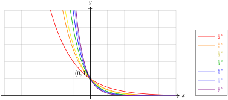
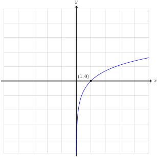

Looking at the graph of \(\exp \colon \R \to (0,\infty)\text{,}\) it appears to satisfy The Horizontal Line Test.

Figure5.2.1.The horizontal line test for \(\exp \colon \R \to (0,\infty)\)
We can verify this algebraically as follows. Suppose the points \(\left(x_1, \exp(x_1)\right)\) and \(\left(x_2, \exp(x_2)\right)\) lie on the same horizontal line. These points must have the same \(y\)-coordinates, so
implies that \(x_1 - x_2 = 0\) and so \(x_1 = x_2\text{.}\) That is to say, the two points are the same point and so any horizontal line intersects the graph in at most one point. This tells us the exponential function is invertible.
Definition5.2.2.The Natural Logarithm.
The natural logarithm, \(\ln \colon (0, \infty) \to \R\text{,}\) is the inverse of \(\exp \colon \R \to (0, \infty)\text{.}\)
Subsection5.2.1Properties of the Natural Logarithm
As the composition inverse of \(\exp \colon \R \to (0, \infty)\text{,}\) the logarithm inherits properties that are very similar to the Properties of Exponential Functions. To describe these properties algebraically it is helpful to phrase the relationship between the exponential and the logarithm as pairing each real number \(x\) with a positive real number \(y\) via
\begin{equation}
y = \exp(x) \quad\text{and}\quad x = \ln(y).\tag{5.2.1}
\end{equation}
Starting from the property \(\exp(0) = 1\text{,}\) taking \(x = 0\) and \(y = 1\) in (5.2.1) allows us to write
We should note this algebraic fact fits with our geometric understanding. The graph of \(\exp \colon \R \to (0, \infty)\) passes through the point \((0,1)\text{.}\) Since the graph of \(\ln \colon (0, \infty) \to \R\) is the reflection of the graph of the exponential function across the line \(y = x\text{,}\) the graph of the natural logarithm passes through the point \((1,0)\text{.}\)
If we introduce another real number, \(x^\prime\text{,}\) then we obtain a second positive real number, \(y^\prime = \exp\left(x^\prime\right)\text{.}\) The function \(\exp\) maps the sum of these numbers to the product of their pairs
so the right-hand side of (5.2.1) tells us that the logarithm pairs the ratio of positive real numbers with the difference of their pairs
\begin{equation*}
x - x^\prime = \log\left(\frac{y}{y^\prime}\right).
\end{equation*}
Finally, we make the following observation as a convenience. If \(y\) is any positive real number and \(r\) is any real number, then we think of \(y^r\) as the product of \(r\) copies of the number \(y\)
\begin{equation*}
y^r = \underbrace{y y y \cdots y}_r.
\end{equation*}
If we transform the log of the product into the sum of the logs \(r\) times, then we obtain the expression
As the composition inverse, the graph of \(y = \ln(x)\) is obtained by reflecting the graph of \(y = \exp(x)\) across the line \(y = x\text{.}\)

Figure5.2.4.
Subsection5.2.3Solving Equations with Transcendental Functions
Sometimes, equations arise that involve the exponential function or the natural logarithm. The general tactic for solving equations of this type is to combine the exponentials or logarithms using Properties of Exponential Functions and Properties of the Logarithm, then use the relation
The two possible solutions are \(x = 0\) and \(x = 2\text{.}\) The solution \(x = 0\) is extraneous because \(\ln(0 - 1) = \ln(-1)\) is undefined. Therefore the only solution is \(x = 2\text{.}\)
We can verify this is a solution by substituting \(2\) for \(x\) to see